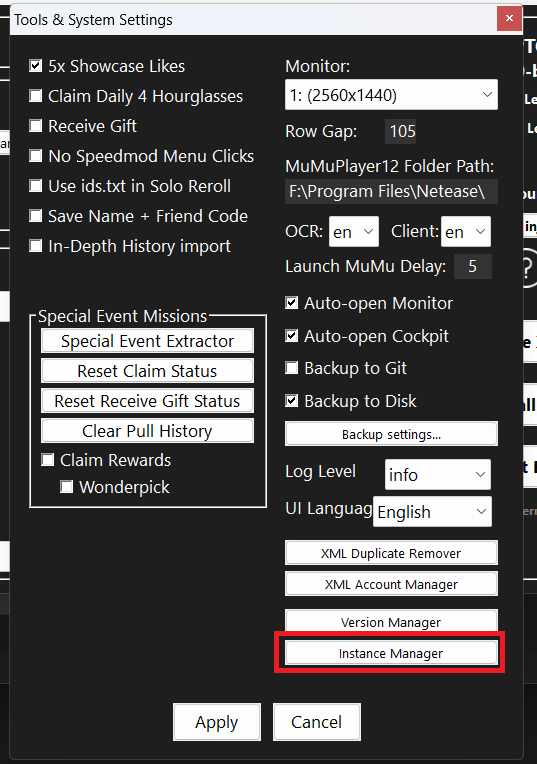
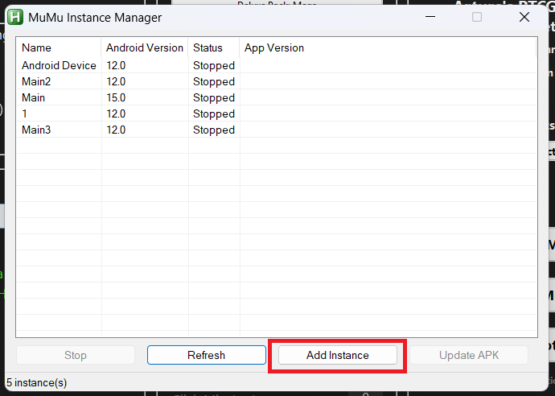
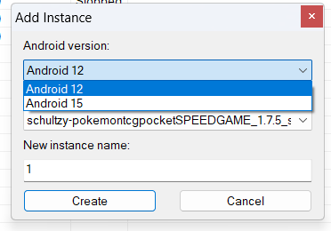
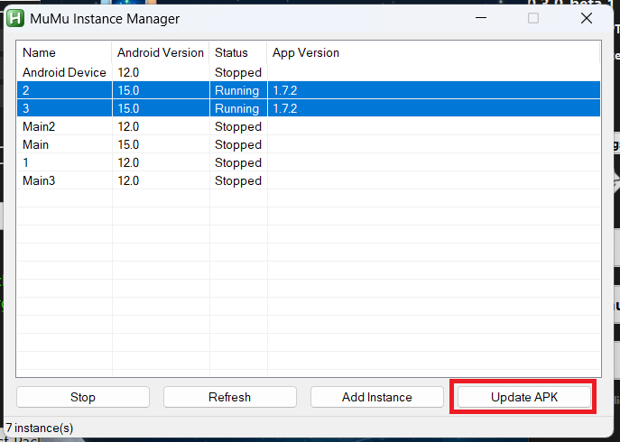
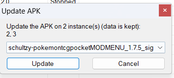

First run
Getting started
Prepare MuMu Player, confirm the game can be controlled, and test the bot with one instance before scaling up.
Before you start
You need
- Windows and the latest official MuMuPlayer. You do not need to create an instance yourself; the Instance Manager does that.
- AutoHotkey v1.1 installed. AutoHotkey v2 is not supported.
- PTCGPB extracted to a writable folder whose full path contains no spaces.
-
The game APK you want to run (Mod Menu or
Speedgame), placed in the
apksfolder of your PTCGPB folder. - Administrator permission when PTCGPB requests it.
Recommended for the first test
- Use exactly one numbered instance.
- Leave timing values at their defaults.
- Keep advanced group and Discord features disabled.
- Watch one complete run before adding instances.
Prepare MuMu Player
-
Install the current MuMuPlayer
Download the latest version from the official MuMuPlayer website and install it. You do not have to create or restore an instance in MuMuPlayer: the Instance Manager creates a ready-to-use instance for you in a later step.
-
Put the game APK in the
apksfolderCopy the APK file you want to run into the
apksfolder inside your PTCGPB folder (for exampleC:\PTCGPB\apks). The folder is created automatically the first time you open the Instance Manager. Keep the original file name: the Instance Manager recognizes the Mod Menu APK byMODMENUin its name and enables the overlay permission for it automatically.No APK, no Instance Manager. While theapksfolder contains no.apkfile, the Instance Manager shows "Put your apks in folder […] to use the update manager" and all of its controls stay disabled. They become available again shortly after you add a file. -
Set the game language
Remember the client language. You will select the matching value under Tools & System. OCR works best when its language also matches your Windows display language.
Configure PTCGPB
-
Check the PTCGPB folder
Move the complete bot folder if any part of its path contains a space. For example, use
C:\PTCGPB, notC:\My Bots\PTCGPB. -
Launch
PTCGPB.ahkwith AutoHotkey v1Approve the administrator permission prompt. On the first run, select the bot interface language.
-
Open Tools & System
Select the monitor, verify the MuMu parent folder, and set the OCR and game client languages. The default MuMu parent folder is
C:\Program Files\Netease. -
Open the Instance Manager
In Tools & System, select Instance Manager. It opens in its own window and lists every MuMu instance with its Android version and status. For running instances it also shows the installed game version in the App Version column.

The Instance Manager button is at the bottom of the Tools & System window. -
Create the instance and name it exactly
1Select Add Instance. PTCGPB locates numbered instances by their exact name, so the first instance must be called
1. By default the dialog suggests the lowest number that is not used yet.
The Instance Manager lists all MuMu instances. Select Add Instance to create a new one. In the dialog, choose:
- Android version: Android 12 or Android 15. Use Android 12 for your first test.
-
APK to install: one of the
files from your
apksfolder, newest first. -
New instance name:
1.

The Add Instance dialog: Android version, APK and instance name. Select Create. The Instance Manager then does everything that used to be manual:
- Creates an empty MuMu instance of the chosen Android version.
- Applies the PTCGPB settings (540 × 960 resolution at 220 DPI, 2 CPU cores and 2 GB RAM, among others) and gives the instance the name you entered.
- Starts the instance, waits until Android has booted and installs the APK. For the Mod Menu APK it also enables the overlay permission.
- Restarts the instance so it runs with the new APK.
This takes a few minutes. The window waits while it works and the status bar shows the current step, so do not close it. A message tells you when the instance is ready. The instance keeps running afterwards.
-
Start and stop instances
The new instance is already running. To start or stop instances later, select them in the Instance Manager and use the Start / Stop button, or use Launch All MuMu in PTCGPB.
-
Set Instances to
1Set Columns to
1for the first test. Instance Start Delay can remain at its default of 10 seconds. -
Choose a bot mode
Use Bot modes to understand what each mode does to accounts. New users normally begin with Create Bots (13P).
-
Select packs and timing
Choose at least one expansion. Start with Delay 250 ms, Swipe Speed 250 ms and Wait Time 5 seconds.
-
Arrange and start
Use Arrange to check that PTCGPB recognizes the MuMu window, then select Start Bot.
Adding a Main account
A Main account is useful only when you intend to run Inject Wonderpick 96P+. It accepts friend requests and performs God Pack tests. You do not need a Main for Create Bots, Inject 13P+ or Inject Rewards.
-
Create its MuMu instance with the
Instance Manager and name
it exactly
Main. -
Name additional main instances
Main2,Main3, and so on. - Enable Run Main(s) where it appears and enter the number of Main instances.
- Enter the 16-digit Friend ID without spaces or dashes when the selected workflow uses the Friend ID field.
After the first successful run
Add numbered MuMu instances one at a time with
Add Instance in the Instance Manager. Name
them 2, 3, and so on without gaps;
the suggested name in the dialog is always the next free
number. Increase Instance Start Delay or
Launch MuMu Delay if startup overloads the
PC. Use Auto-open Monitor once unattended
runs are stable.
Updating the game APK
When a new APK is available, copy it to the
apks folder and update your running instances
from the Instance Manager. The update installs over the
existing game, so the data of the instance is kept.
-
Select the running instances
Click an instance, or hold Ctrl/Shift to select several. Update APK is available only when every selected instance is Running. The App Version column shows which game version each running instance currently has.

Two running instances selected. Select Update APK to continue. -
Choose the APK and confirm
Pick the APK from the drop-down (the files in your
apksfolder, newest first) and select Update.
The Update APK dialog lists the selected instances and the APK to install. -
Wait for the result
The APK is installed on all selected instances at the same time. For the Mod Menu APK the overlay permission is enabled again, and every updated instance is restarted. A summary lists the result per instance, for example 2: updated and restarted. An instance that stopped in the meantime is reported as not running and skipped.